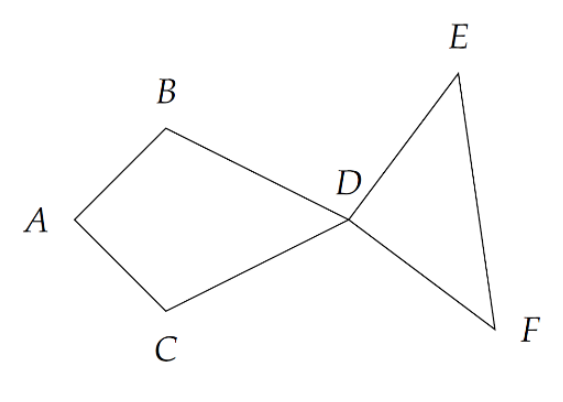

在平面坐标系上给定 $n$ 个不同的整点 (也即横坐标与纵坐标皆为整数的点)。我们称从这 $n$ 个点中选择 $6$ 个不同的点所组成的有序六元组 $\left< A, B, C, D, E, F \right>$ 是一条「鱼」，当且仅当：$AB = AC, BD = CD, DE = DF$ (身形要对称)，并且 $\angle BAD, \angle BDA$ 与 $\angle CAD, \angle CDA$ 都是锐角 (脑袋和屁股显然不能是凹的)，$\angle ADE,\angle ADF$ 大于 $90^\circ$ (也即为钝角或平角，为了使尾巴不至于翘那么别扭)。(注：这里的角度取值范围为 $\left[ 0, 180^\circ \right]$。
下图就是一个合法的鱼的例子：
其中点的组成相同，但顺序不同的鱼视为不同的鱼，即 $\left< A, B, C, D, E, F \right>$ 和 $\left< A, C, B, D, E, F \right>$ 视为不同的两条鱼 (毕竟鱼也有背和肚子的两面)，同理 $\left< A, B, C, D, E, F \right>$ 和 $\left< A, B, C, D, F, E \right>$ 也可以视为不同的两条鱼 (假设鱼尾巴可以打结)。
问给定的 $n$ 个点可以构成多少条鱼。特别的，数据保证 $n$ 个点互不重复。
第一行包含一个正整数 $n$ ($6 \leq n \leq 1000$)，代表平面上点的个数。
接下来 $n$ 行，每行两个整数 $x, y$ ($-10^9 \leq x, y \leq 10^9$)，描述一个点的坐标。
输出一行一个整数，代表鱼的个数。
由于 $DB = DC, DE = DF$，可以发现，由 $D$ 点为顶点引出了两个等腰三角形 (Isosceles triangle)，这启发我们对于每个点 $P$，统计以 $P$ 为顶点的等腰三角形。
枚举 $P$ 后，将其余点按照到 $P$ 的距离排序 (等距的按极角排序)，对于相同的距离的一段区间 $K_1, K_2, \cdots, K_r$，$\forall 1 \leq i < j \leq r$，只要 $P, K_i, K_j$ 不共线，则 $\triangle P K_i K_j$ 就是以 $P$ 为顶点的等腰三角形。
接下来考虑如何统计 "鱼" 的个数。
枚举鱼上的 $D$ 点，以及以它为顶点构成的等腰三角形 $\triangle DEF$。又有 $\angle ADE, \angle ADF > \dfrac \pi 2$，因此射线 $DA$ 的可行范围为以 $D$ 点为极点的一段极角连续的区间。
我们要快速统计有多少个合法的 $\left( A, B, C \right)$ 三元组，满足四边形 $DBAC$ 为凸的筝形。
由于我们对于每个点 $P$，统计了所有以 $P$ 为顶点的等腰三角形，设其中一个为 $\triangle P K_1 K_2$，则 $P$ 一定在线段 $K_1 K_2$ 的垂直平分线上，于是我们可以顺便记录一下对于任意两个点 $K_1, K_2$，它们中垂线上的所有点以及方向 (在 "上方" 还是 "下方")。
现在问题就简单了。还是枚举 $D$ 点，第一轮先枚举 $B, C$，将这些贡献记录到射线 $DA$ 的方向上。也就是说，对每个以 $D$ 出发的射线 $r$，记录有多少个 (凸的) 筝形 $DBAC$，满足 $A$ 在 $r$ 上。设满足条件筝形的个数 $cnt_r$。
于是对于每个 $\triangle DEF$，计算出 $A$ 点的可行区间后，直接在 (做前缀和后的) $cnt$ 数组上进行二分，即可得到以 $\triangle DEF$ 为尾巴的鱼的数量。
最后，由于每个无序 $6$ 元组可以确定 $4$ 条鱼，对答案乘 $4$ 即可。
总时间复杂度为 $\left( T \left( n \right) \cdot \log n \right)$，其中 $T \left( n \right)$ 为这 $n$ 个点构成的等腰三角形的个数。
目前所得的 $T \left( n \right)$ 最紧的界为 $T \left( n \right) = O \left( n^{\left( 11 \mathrm e - 3 \right) / \left( 5 \mathrm e - 1 \right)} + \epsilon \right) = O \left( n^{2.137} \right)$，不过在实际数据中这个值不超过 $1.25 \times 10^6$。
#include <bits/stdc++.h>
#define EB emplace_back
#define cross(x, y, z) (((y) - (x)) ^ ((z) - (x)))
#define _ std::ignore
typedef long long ll;
typedef __int128 lll;
typedef std::vector <int> vector;
const int N = 1054, M = 2003731;
struct vec2 {
ll x, y;
vec2 (ll _x = 0, ll _y = 0) : x(_x), y(_y) {}
inline vec2 operator + (const vec2 &B) const {return vec2(x + B.x, y + B.y);}
inline vec2 operator - (const vec2 &B) const {return vec2(x - B.x, y - B.y);}
inline vec2 operator * (ll k) const {return vec2(x * k, y * k);}
inline lll operator * (const vec2 &B) const {return (lll)x * B.x + (lll)y * B.y;}
inline lll operator ^ (const vec2 &B) const {return (lll)x * B.y - (lll)y * B.x;}
inline lll norm2() const {return (lll)x * x + (lll)y * y;}
inline bool operator < (const vec2 &B) const {return (y < 0) ^ (B.y < 0) ? B.y < 0 : (*this ^ B) > 0 || ((*this ^ B) == 0 && x >= 0 && B.x < 0);}
inline bool operator == (const vec2 &B) const {return x == B.x && y == B.y;}
inline vec2 trans(ll a11, ll a12, ll a21, ll a22) const {return vec2(x * a11 + y * a12, x * a21 + y * a22);}
} p[N];
typedef std::tuple <vec2, int, int> tup;
int n, isosceles = 0;
int o[N], C[N], ML[N][N], MR[N][N];
vector circle[N][N];
int fgcnt = 0, sum[M];
tup fg[M];
int main() {
int i, j, k, b, c, d, e, f, bgn, end; ll ans = 0; lll D2, CRS; vec2 La, Ra;
scanf("%d", &n);
for (i = 0; i < n; ++i) scanf("%lld%lld", &p[i].x, &p[i].y);
for (i = 0; i < n; ++i) {
std::iota(o, o + n, 0), std::remove(o, o + n, i);
std::sort(o, o + (n - 1), [i] (const int x, const int y) {ll sgn = (p[x] - p[i]).norm2() - (p[y] - p[i]).norm2(); return sgn < 0 || (sgn == 0 && p[x] < p[y]);});
for (k = j = 0; j < n - 1; j = k) {
for (D2 = (p[o[j]] - p[i]).norm2(); k < n - 1 && (p[o[k]] - p[i]).norm2() == D2; ++k);
if (j == k) continue;
for (b = j; b < k; ++b) circle[i][C[i]].EB(o[b]);
for (c = j; c < k; ++c)
for (d = c + 1; d < k; ++d) {
std::tie(e, f) = std::minmax(o[c], o[d]);
if (!(CRS = cross(p[e], p[f], p[i]))) continue;
CRS > 0 ? ++ML[e][f] : ++MR[e][f], ++isosceles;
}
std::sort(circle[i][C[i]].begin(), circle[i][C[i]].end()), ++C[i];
}
}
fprintf(stderr, "# of isosceles = %d\n", isosceles);
for (d = 0; d < n; ++d) {
for (fgcnt = i = 0; i < C[d]; ++i) {
vector &circ = circle[d][i]; k = circ.size();
for (b = 0; b < k; ++b)
for (c = b + 1; c < k; ++c)
if (!((La = p[ circ[b] ] + p[ circ[c] ] - p[d] * 2) == vec2()))
fg[fgcnt++] = tup(La, circ[b], circ[c]);
}
std::sort(fg, fg + fgcnt);
for (i = 0; i < fgcnt; ++i)
std::tie(_, b, c) = fg[i], sum[i + 1] = sum[i] + (cross(p[b], p[c], p[d]) > 0 ? MR[b][c] : ML[b][c]);
for (i = 0; i < fgcnt; ++i) {
std::tie(_, e, f) = fg[i];
if (cross(p[e], p[f], p[d]) < 0) std::swap(e, f);
La = (p[f] - p[d]).trans(0, -1, 1, 0);
Ra = (p[e] - p[d]).trans(0, 1, -1, 0);
bgn = std::upper_bound(fg, fg + fgcnt, tup(La, INT_MAX, INT_MAX)) - fg;
end = std::lower_bound(fg, fg + fgcnt, tup(Ra, INT_MIN, INT_MIN)) - fg;
if (La < Ra || ((La ^ Ra) == 0 && La * Ra > 0)) {
if (bgn < end) ans += sum[end] - sum[bgn];
} else
ans += sum[fgcnt] - sum[bgn] + sum[end];
}
}
printf("%lld\n", ans * 4);
return 0;
}
坑1：在极角排序叉积的过程中有可能会爆 long long 需要使用 __int128 或 double。
坑2：由于等腰三角形 $\triangle P K_1 K_2$ 中，$K_1$ 和 $K_2$ 是无序的，因此存储时也要无序，比如可以规定 $K_1 < K_2$ 后往数组 M[K1][K2] 中存储。